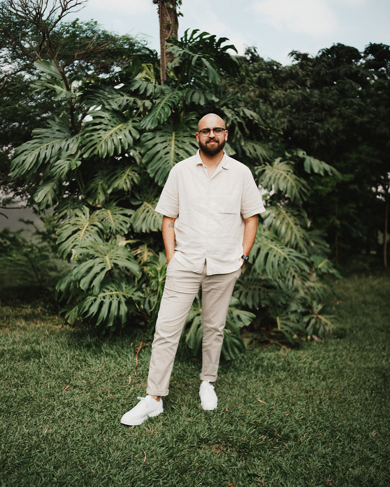

Com mais de 10 anos de experiência, consolidei minha trajetória criativa focada na indústria do futebol. Atualmente, dedico meu trabalho ao futebol paulista, o ecossistema esportivo mais inovador do Brasil, desenvolvendo projetos de alto impacto visual para competições, instituições e clubes.
Sou especialista na criação de identidades visuais e design digital, mas minha base técnica multidisciplinar me permite transitar por frentes como edição de vídeo, motion e web design, entregando pacotes visuais coesos do smartphone ao gramado. Além disso, utilizo estrategicamente a Inteligência Artificial em meu fluxo de trabalho para acelerar processos mecânicos e elevar o rigor estético das composições, unindo sempre essa ferramenta ao meu olhar técnico de pós-produção.
